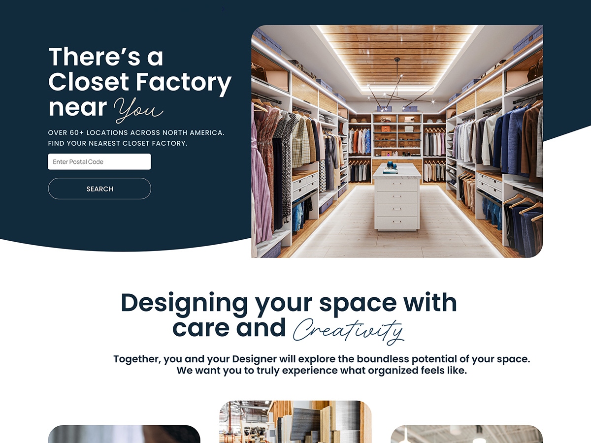
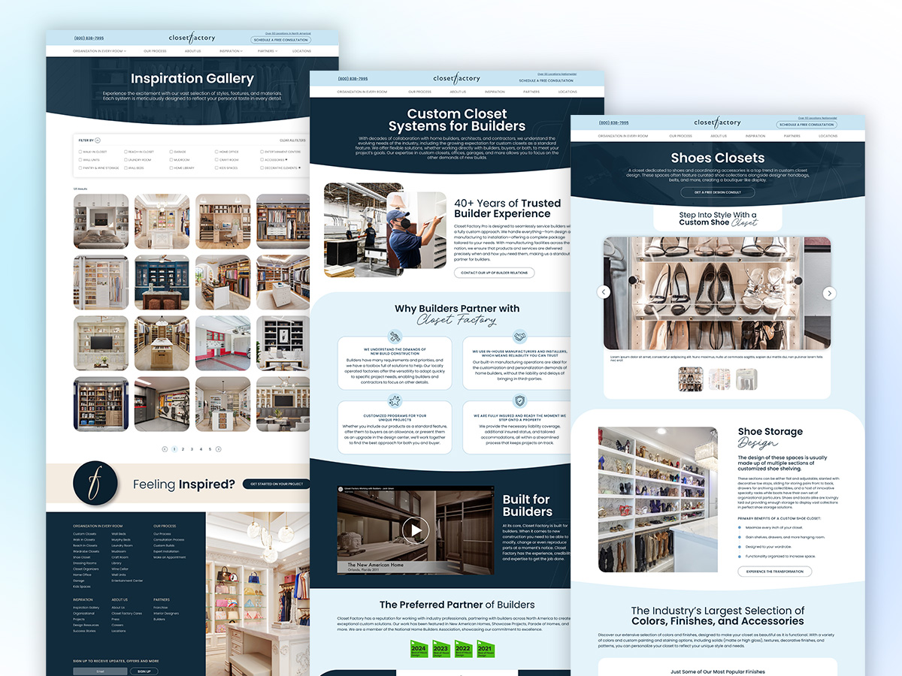
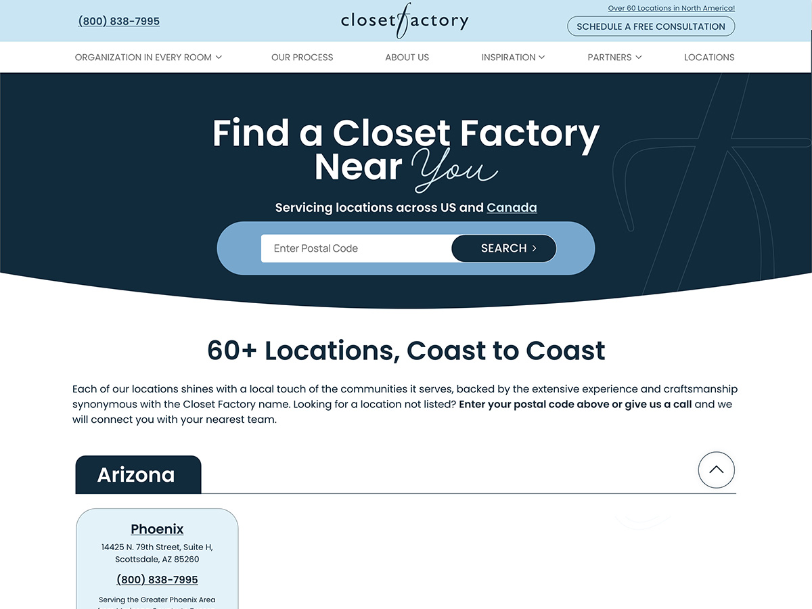
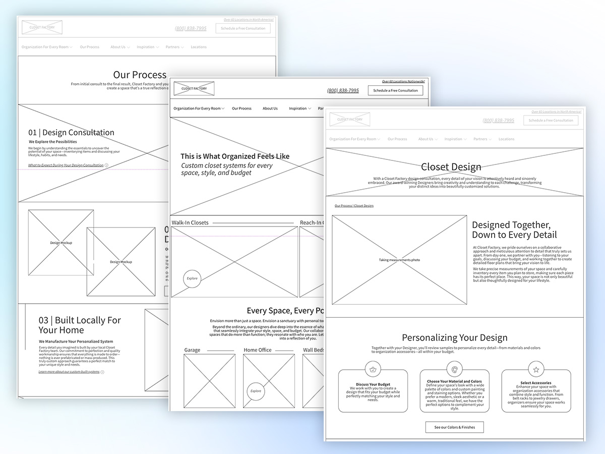
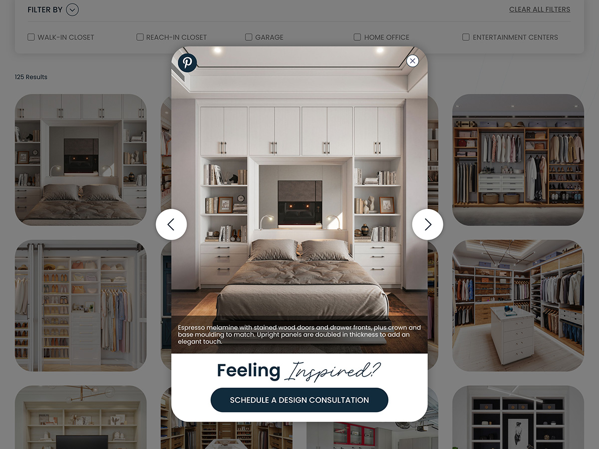
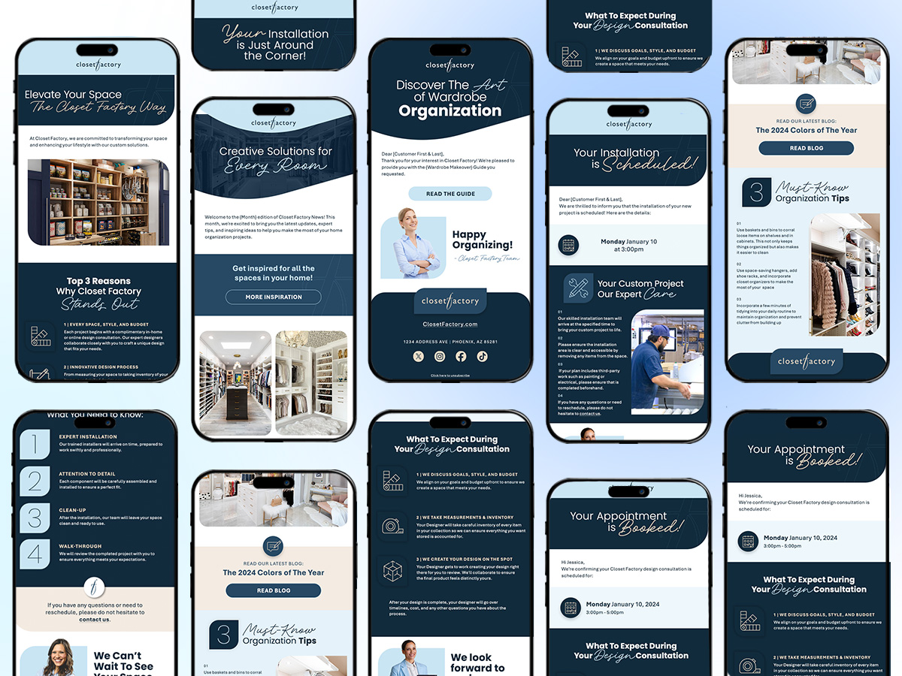

Closet Factory, evolved.
A website redesign for a national custom organization franchise leader, rebuilt around a single insight: people don't purchase custom closets. They want the feeling of being organized based on their unique needs.
Closet Factory has been a leader in custom home organization for over three decades. Customers trusted the work, while sales teams offered free in-home design consultations as their highest converting moment. The challenge wasn't the business. It was the digital experience users encountered, and the disruptive journey throughout the process.
The website used industry jargon in its navigation that usability testing showed was actively confusing first-time visitors. The hierarchy on key pages didn't reflect how people actually shop for custom organization. Visitors arrived expecting imagery, inspiration, and a quick way to talk to a designer, but were greeted by walls of text instead. 85% of moderated testers said they felt overwhelmed. On mobile, the experience broke down even further, with research showing users rage-clicking the hamburger menu and the 61-locations CTA before reaching the consultation form.
My role as lead UX Designer was to start with a brand refresh that defined the visual system, then carry it through to the new website so booking a free in-home design consultation felt like the natural next step for their customers, not a hurdle. The work also extended to email campaigns, print, social, digital ads, and showroom signage.
A website built around the user's needs.
Restructured information architecture. A mobile-first layout system. Imagery promoted to lead role. And accessibility baked in from wireframe stage. Because compliance isn't a feature you bolt on at QA.
Anchored in customer research and usability testing.






A digital experience that finally matched the brand's reputation.
Let's build something worth shipping.
I lead with empathy and back it up with data. If you've got a project that needs both, drop a note over there.